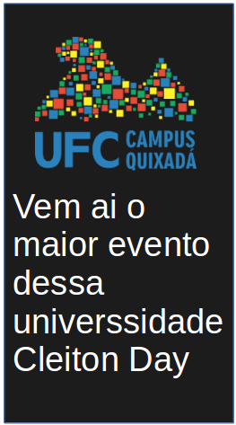

Perguntas frequentes
Porque essa pagina?
essta pagina surgiu como proposta da disciplina Desenvolvimento de Softwere WEB com o intuido de praticar e aprenter linguagens de parcação de texto e script.
Porque a piada rotineira com o Claiton?
isso surgio como piada interna do autor desta pagina e seus amigos, sem uma pessoa especifica como alvo mas apenas uma brincadeira com a palavra.